Soste Unità da Diporto
Il portale delle Smart Guide è uno spazio digitale che raccoglie risorse pratiche e aggiornate in un unico ambiente intuitivo. Strumenti chiari e organizzati per organizzarti e trovare subito ciò che ti serve.
01.
Creazione sosta per unità da Diporto
Panoramica sulla creazione e gestione della Soste per unità da Diporto, dall'inserimento dei dati al salvataggio e invio della stessa.
Punti di accesso alla creazione
La creazione di una nuova sosta avviene:
Menu a tendina
Cliccando sulla voce "Gestione e consultazione" viene visualizzato un menu a tendina, da cui è possibile accedere alla voce "Soste", al cui interno è presente il pulsante di creazione.
Dalla dashboard è possibile creare nuove soste cliccando "Crea nuova sosta".
Crea nuova sosta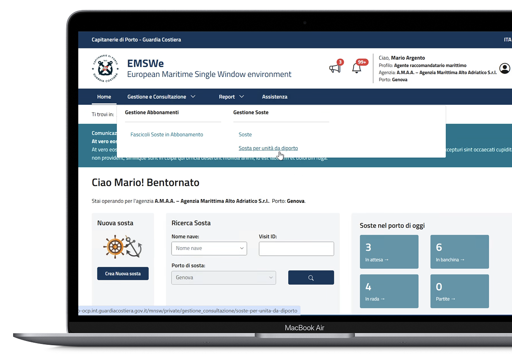
Creazione sosta
Passaggi per creare una nuova sosta per navi da Diporto per l'Unione Europea
Dopo aver cliccato il pulsante "Nuova sosta", seguire tutti i passaggi indicati a sistema e inserire le informazioni necessarie per cominciare l'iter di creazione di una nuova sosta.
Ricerca nave tramite uno dei parametri visualizzati
Ricercare la nave tramite uno dei campi visualizzati a sistema: in questo caso "Nome Nave". Successivamente cliccare il pulsante "Avvia ricerca".
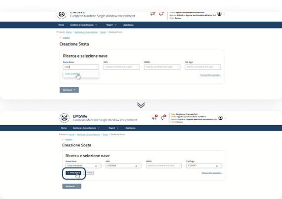
Possibile errore
Se la nave selezionata non rientra nelle casistiche per tipologia pratica amministrativa per unità da Diporto, il sistema lo segnala con una finestra informativa.
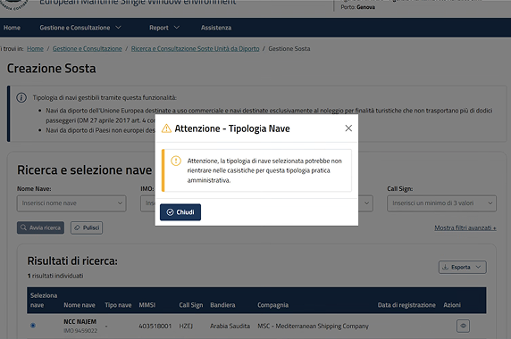
Risultati e conferma
Dopo aver cliccato su "Vai avanti", il sistema nel caso in cui esista una sosta sullo stesso porto, lo segnala tramite una finestra informativa ed è possibile procedere utilizzando la sosta o procedendo con la creazione di una nuova sosta.
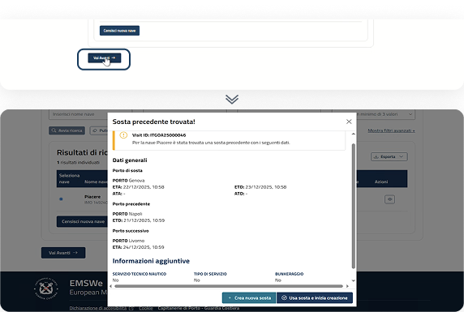
Passaggi per creare una nuova sosta per navi da Diporto per l'Unione Europea
Step di creazione di una nuova Sosta
Per creare una nuova sosta, l'utente dovrà procedere seguendo i passaggi sottostanti.
Dati generali
Consente di inserire le informazioni generali, quali: Porto di sosta (con ETA e ETD), Porto Precedente (con ETD) e Porto successivo (con ETA).

Informazioni aggiuntive
Consente di inserire informazioni aggiuntive utili a definire meglio la richiesta. Come: Servizi Tecnico Nautici, Bunkeraggio.
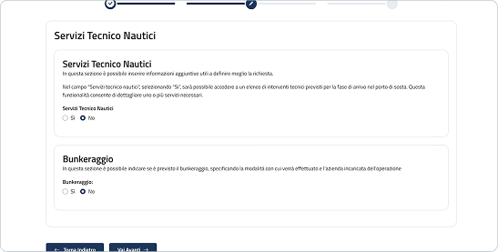
Riepilogo sosta
Consente di visualizzare il riepilogo delle informazioni inserite negli step precedenti e procedere con il salvataggio e invio della creazione di una sosta.

Creazione di una nuova sosta per navi da Diporto per l'Unione Europea
Dati generali
DATI GENERALI
INFORMAZIONI AGGIUNTIVE
RIEPILOGO SOSTA
Visualizzazione nave selezionata
In questo step è possibile inserire le informazioni generali relative alla sosta, ai porti ed alle date di partenza e arrivo.
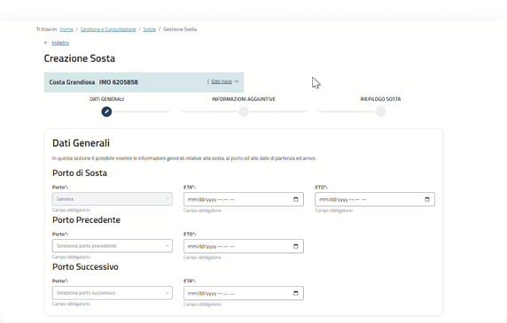
Inserimento dati generali e possibili errori
Nel caso in cui i dati inseriti non siano corretti, il sistema informa l'utente tramite un alert e non consente di procedere allo step successivo.
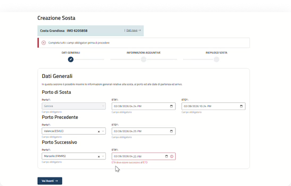
Revisione e conferma
Verificato il corretto inserimento dei dati generali, selezionare il pulsante "Vai avanti" per procedere allo step successivo.
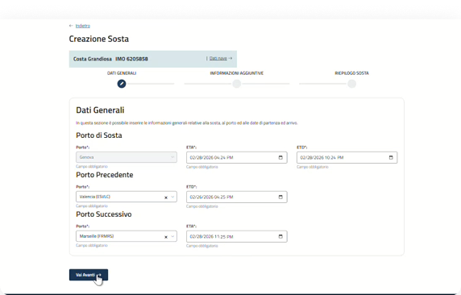
In caso di incongruenze tra le date di arrivo e partenze tra i vari porti, il sistema informerà l'utente tramite messaggi di errore posizionati sotto i campi compilati in modo errato e tramite alert informativi.
Creazione di una nuova sosta per navi da Diporto per l'Unione Europea
Informazioni aggiuntive
DATI GENERALI
INFORMAZIONI AGGIUNTIVE
RIEPILOGO SOSTA
Visualizzazione delle informazioni aggiuntive
Il sistema dà la possibilità di inserire una serie di informazioni aggiuntive utili a definire meglio la sosta e a pre-popolare l'elenco degli Obblighi di Dichiarazione.
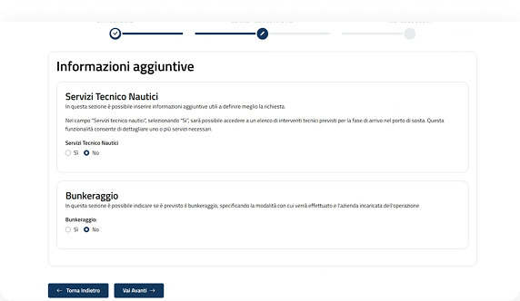
Aggiunta e modifica delle informazioni
L'utente può aggiungere e successivamente modificare le informazioni relative a Servizi Tecnico Nautici in Arrivo e Bunkeraggio.
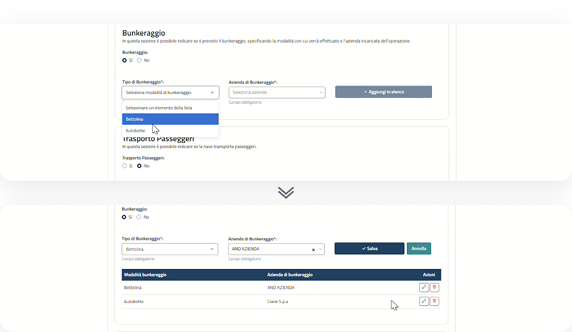
Verifica e step successivo
Dopo aver selezionato le informazioni aggiuntive, cliccare su "Vai avanti" per proseguire allo step finale.
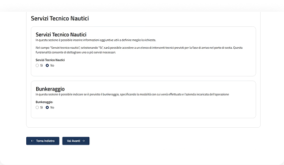
Creazione di una nuova sosta per navi da Diporto per l'Unione Europea
Inserimento informazioni aggiuntive
Servizi Tecnico Nautici
Dopo aver selezionato "Sì", scegliere la tipologia di servizio.

Dopo aver selezionato la tipologia cliccare "Aggiungi in elenco".

La tipologia aggiunta può essere eliminata tramite l'"icona del cestino".

Bunkeraggio
Selezionare tipologia e azienda, quindi cliccare "Aggiungi in elenco".

È possibile modificare o eliminare tramite gli appositi pulsanti.

Dopo aver modificato, cliccare "Salva" o "Annulla".

Creazione di una nuova sosta per navi da Diporto per l'Unione Europea
Riepilogo sosta
DATI GENERALI
INFORMAZIONI AGGIUNTIVE
RIEPILOGO SOSTA
Visualizzazione riepilogo
Nell'ultimo passaggio è possibile consultare tutte le informazioni inserite.

Salva e invia
Dopo aver verificato il corretto inserimento dei dati negli step precedenti, cliccare il pulsante "Salva e invia" per procedere.

Conferma salvataggio
Il sistema mostra una finestra di conferma e comunica l'avvenuta creazione. Alla sosta viene assegnato un "Visit ID" e assume lo stato "Aperta".
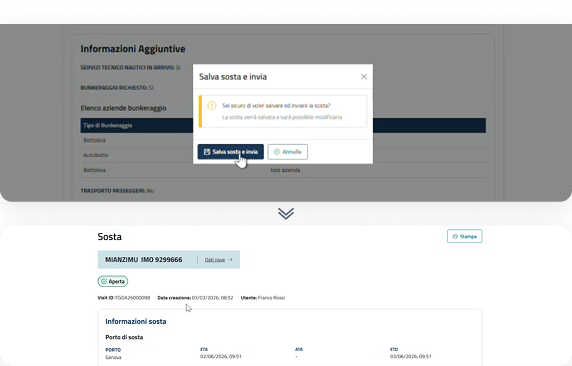
Ricerca delle navi
Ulteriori modalità di ricerca
Nave non censita
È possibile censire una nuova nave cliccando sul pulsante "Censisci nuova nave", disponibile sia all'interno della finestra visualizzata, se la ricerca non restituisce risultati, sia sotto la tabella dei risultati.
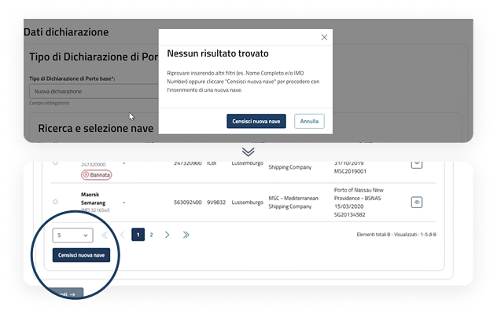
Nave bannata
Nel caso in cui si selezioni una nave bannata, il sistema ne dà evidenza tramite una finestra di attenzione richiedendo l'inserimento obbligatorio di una motivazione per poter proseguire.
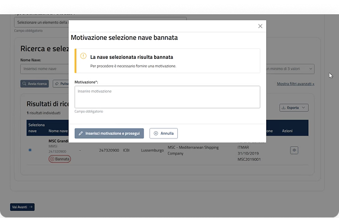
La nave non rientra nelle casistiche
Nel caso in cui si selezioni una tipologia di nave che potrebbe non rientrare nelle casistiche per la tipologia di pratica amministrativa.
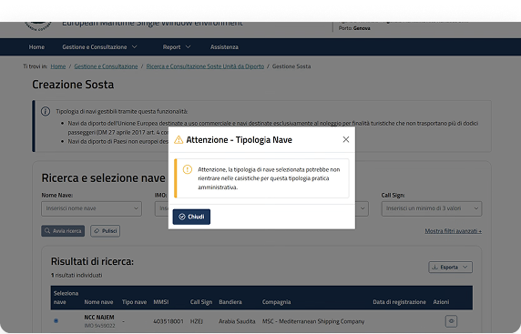
02.
Ricerca e consultazione sosta per unità da Diporto
Una panoramica sui flussi di ricerca e consultazione delle soste per unità da Diporto.
Punti di accesso per la ricerca soste per unità da Diporto
La ricerca di una sosta per unità da Diporto avviene tramite:
Menu a tendina
Cliccando sulla voce "Gestione e consultazione" viene visualizzato un menu a tendina, da cui è possibile accedere alla voce "Soste per unità da diporto", al cui interno è possibile ricercare le soste per unità da diporto presenti a sistema.
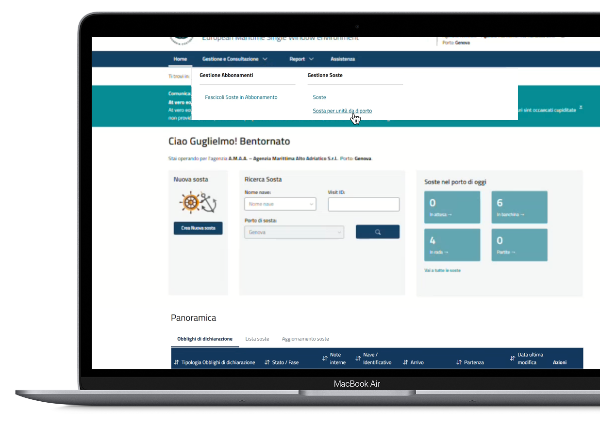
Ricerca e consultazione di una sosta: lista soste
Funzionalità in pagina
Accedendo alla sezione "Lista soste", il sistema mostra i filtri di ricerca disponibili, sia di base sia avanzati. Dopo aver selezionato i criteri desiderati e cliccato su "Cerca", i risultati vengono visualizzati in forma tabellare.

Sezione filtri
La sezione Filtri consente di ricercare le soste secondo diversi criteri. Sono disponibili filtri base e filtri avanzati per affinare la ricerca.

Visualizzazione di "Lista Soste" o "Aggiornamento Soste"
È possibile scegliere di visualizzare i risultati di ricerca della lista soste e degli aggiornamenti delle soste.
Filtri e azioni sulla tabella
I risultati della ricerca possono essere filtrati per "Attività" e "Stato Attività". Selezionando una o più soste è possibile salvare e inviare, cancellare ed esportare.
Visualizzazione soste tramite tabella
I risultati della ricerca vengono presentati in una tabella, mostrando le informazioni e azioni principali.

Visualizzazione risultati in tabella: Lista Soste e Aggiornamento soste
I risultati di ricerca delle soste, possono essere visualizzati tramite tabella secondo due modalità:
Lista Soste
È l'elenco di tutte le soste presenti a sistema, create dall'utente che ha effettuato l'accesso, sulle quali è possibile accedere al dettaglio e svolgere diverse azioni.

Aggiornamenti soste
È un elenco di attività che l'utente deve svolgere sia per gestire le soste create dal Collaboratore, sia per integrare gli Obblighi di Dichiarazione. Sarà possibile filtrare i risultati in tabella per "Attività" e "Stato Attività".

Ricerca e consultazione Sosta
Dettaglio della sosta
All'interno della pagina sono consultabili le seguenti informazioni:
- Informazioni sosta
- Informazioni aggiuntive
- Obblighi di dichiarazione
- Comunicazioni
- Controlli frontiera
- Merci
- Rifiuti
- Sicurezza
- FAL
Possibili azioni secondarie sulla richiesta:

Ricerca e consultazione Sosta
Obblighi di Dichiarazione (Unione Europea)
Per "Pre Arrivo" e "Arrivo"
- C3.1 (FAL1S)
- A4.1
- C8: in base alla bandiera della nave oggetto della sosta la compilazione dell'Obbligo di Dichiarazione è:
- Non obbligatoria per le navi di bandiera italiana;
- Obbligatoria per le navi di bandiera non italiana.
Per "Partenza"
- C4.1 (FAL1S)
- A4.2
- C9: in base alla bandiera della nave oggetto della sosta la compilazione dell'Obbligo di Dichiarazione è:
- Non obbligatoria per le navi di bandiera italiana;
- Obbligatoria per le navi di bandiera non italiana.
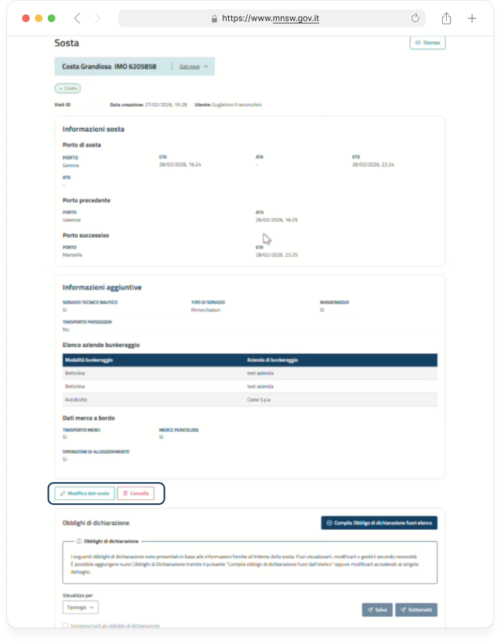
Ricerca e consultazione Sosta
Obblighi di Dichiarazione (Extra-Unione Europea)
Per "Pre Arrivo" e "Arrivo"
- Solo la C3.1 (FAL1S): nel caso di porto precedente italiano e porto di sosta successivo italiano.
- In aggiunta alla C3.1 (FAL1S) anche la C3: si interrompe il regime di semplificazione in questi due scenari:
- Nel caso di porto precedente estero e primo porto di sosta italiano
- Nel caso di porto di sosta italiano e porto successivo "Estero" o "Mare"
- A4.1
- C8: La compilazione è obbligatoria.
Per "Partenza"
- C4.1 (FAL1S): nel caso di porto precedente italiano e porto di sosta successivo italiano.
- In aggiunta alla C4.1 (FAL1S) anche la C4: si interrompe il regime di semplificazione nei seguenti scenari:
- Nel caso di porto precedente estero e primo porto di sosta italiano
- Nel caso di porto di sosta italiano e porto successivo "Estero" o "Mare"
- Nel caso in cui vi sia verificato un avvicendamento del comandante nel porto
- A4.2
- C9: La compilazione è obbligatoria.
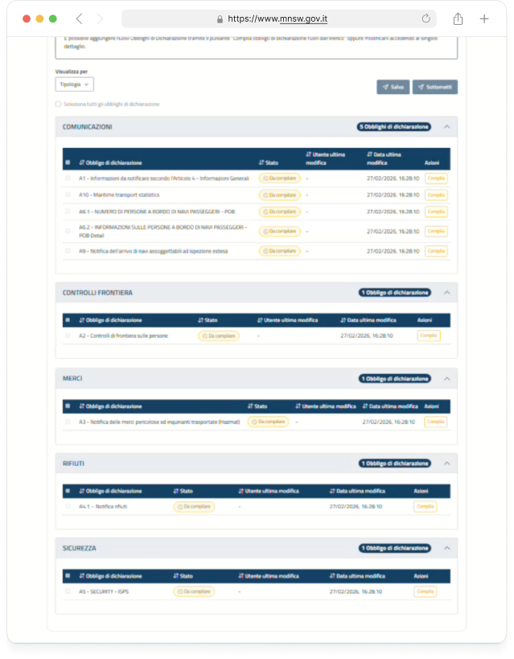
03.
Modifica sosta per unità da Diporto
Panoramica sul flusso di modifica delle soste per unità da Diporto, successivamente alla creazione delle stesse.
Modifica sosta per unità da Diporto
Punto di Accesso della modifica di una sosta
Attivazione "Modifica" dall'elenco risultati di ricerca
Nell'elenco dei risultati di ricerca delle soste è possibile accedere al dettaglio in modalità modifica cliccando sull'"icona della matita".
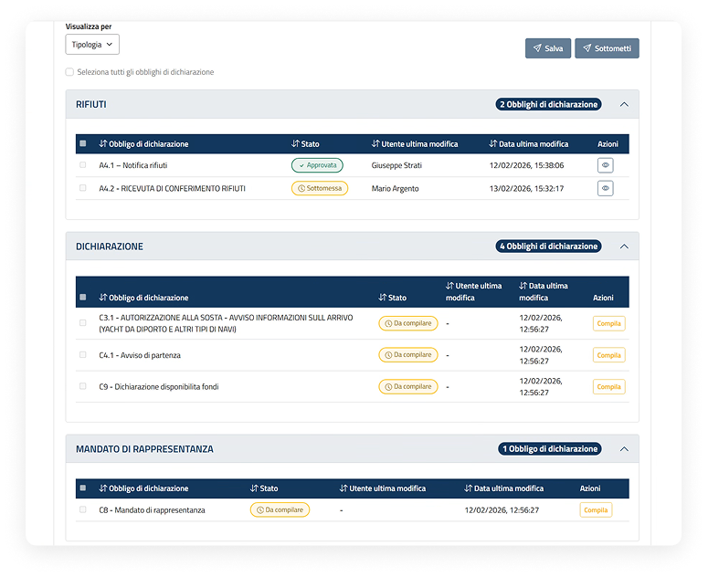
Attivazione Modifica da pagina di dettaglio della sosta
Nell'elenco dei risultati di ricerca delle soste è possibile accedere al dettaglio in modalità visualizzazione cliccando sull'"icona dell'occhio". All'interno del dettaglio per procedere con la modifica sarà necessario cliccare sul pulsante "Modifica Dati Sosta".
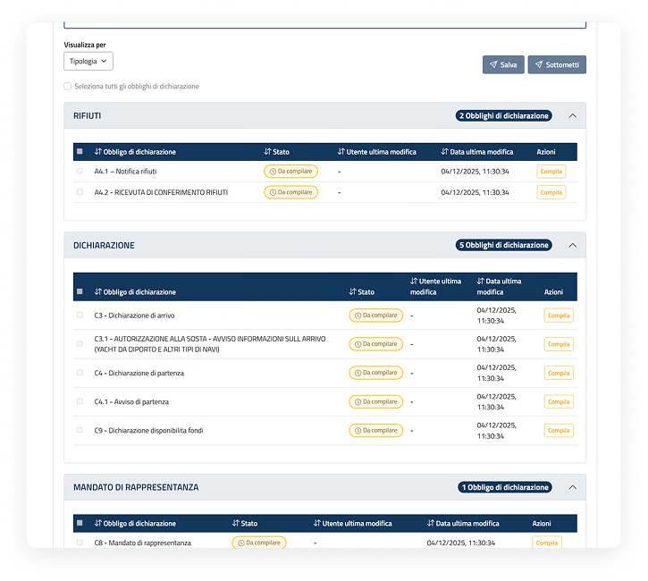
Modifica sosta per unità da Diporto
Dati generali
DATI GENERALI
INFORMAZIONI AGGIUNTIVE
RIEPILOGO SOSTA
All'interno della pagina di dettaglio in modalità Modifica, il processo di aggiornamento delle informazioni seguirà lo stesso flusso guidato a step, descritto nel flusso di "Creazione di una sosta" (pag 00).
All'interno della pagina non è possibile scegliere una nave differente rispetto a quella precedentemente inserita né il porto di sosta.
È consentita esclusivamente la modifica del porto successivo di sosta e relativo ETD, se è stato fissato l'ATA all'interno della sosta.
Nel caso di Unità da Diporto non europee proveniente da porti esteri sarà presente la sezione "Elenco Successivi Porti di Scalo" e sarà possibile aggiornare anche l'elenco.
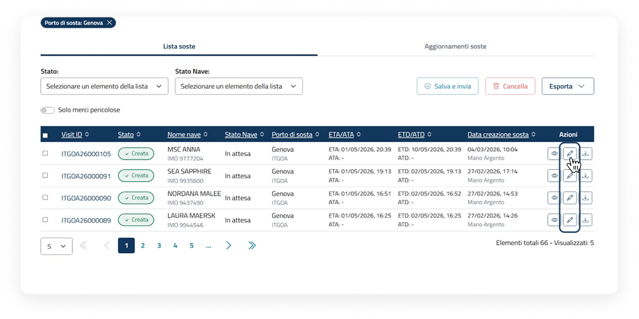
Modifica sosta per unità da Diporto
Riepilogo sosta
DATI GENERALI
INFORMAZIONI AGGIUNTIVE
RIEPILOGO SOSTA
Salva modifica
All'interno del riepilogo della sosta, sarà possibile salvare la modifica tramite l'apposito pulsante "Salva modifica".
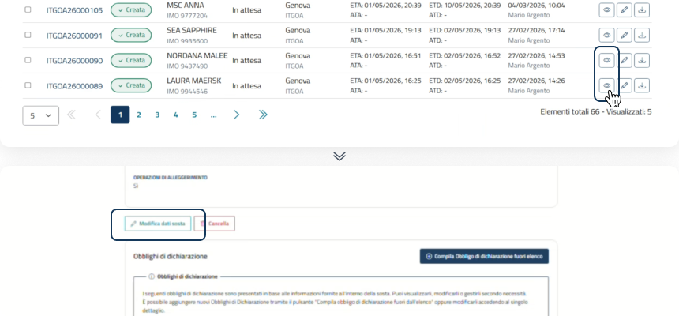
Conferma salvataggio
Il sistema mostra una finestra che informa l'utente dell'avvenuto successo di invio e salvataggio.
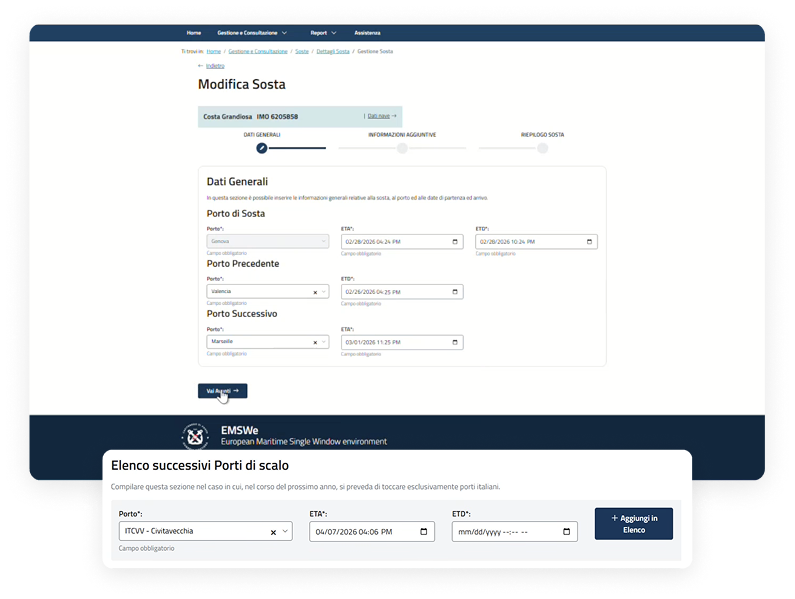
Dettaglio e cambio stato
Dopo aver salvato la modifica della sosta, all'interno del dettaglio lo stato resta "Aperta".
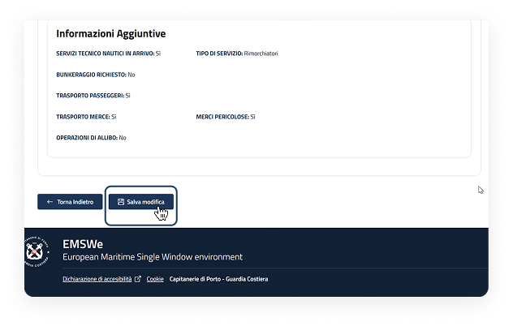
Lo stato della sosta assumerà lo stato "Chiusa" una volta fissato l'ATD e non sarà più modificabile.
04.
Cancellazione sosta per unità da Diporto
Panoramica sul flusso di cancellazione di una Sosta per unità da Diporto.
La cancellazione sarà possibile soltanto se non è stata già impostata l'ATA all'interno della sosta e se gli Obblighi di Dichiarazione presenti non siano già stati lavorati a vario titolo dall'Autorità Marittima.
Cancellazione sosta per unità da Diporto
Cancellazione sosta tramite tabella
Dopo aver creato una sosta, l'utente può eliminarla tramite le azioni presenti in tabella, attraverso i seguenti passaggi:
La sosta, una volta cancellata, non sarà più disponibile e gli Obblighi di Dichiarazione per i quali non è ancora stata svolta alcuna attività da parte del CdP verranno posti in stato "Annullata".
EliminaCancella tramite tabella
Nell'elenco risultati della ricerca delle soste è possibile eliminare la sosta selezionandola attraverso la checkbox e successivamente cliccando il pulsante "Elimina".
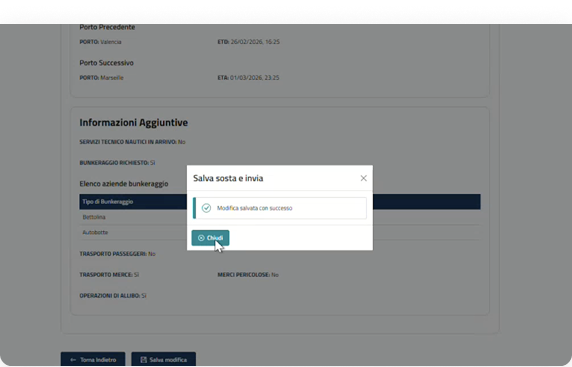
Finestra di conferma eliminazione e successo
Il sistema mostra una finestra in cui l'utente deve confermare di essere sicuro di voler eliminare la sosta. Cliccare Cancella per proseguire. Una volta eliminata il sistema lo comunica all'utente tramite alert informativo.

Cancellazione sosta per unità da Diporto
Cancellazione sosta dal dettaglio
Dopo aver creato una sosta, l'utente può eliminarla tramite le azioni presenti all'interno del dettaglio, attraverso i seguenti passaggi:
Cancella dal dettaglio della sosta
Nell'elenco risultati delle soste è possibile accedere al dettaglio cliccando sull'"icona dell'occhio". All'interno del dettaglio per procedere con la cancellazione sarà necessario cliccare sul pulsante "Cancella".
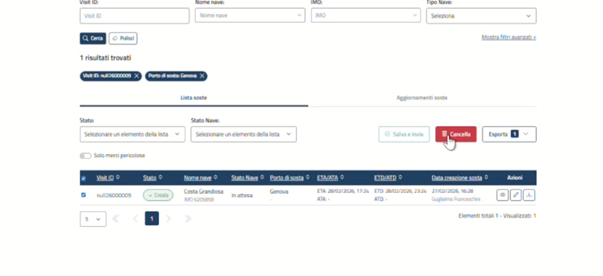
Finestra di conferma e giustificazione
Il sistema mostra una finestra di conferma che informa l'utente che l'eliminazione della sosta è irreversibile e che, una volta cancellata, non sarà più disponibile. Cliccare "Cancella sosta" per confermare.
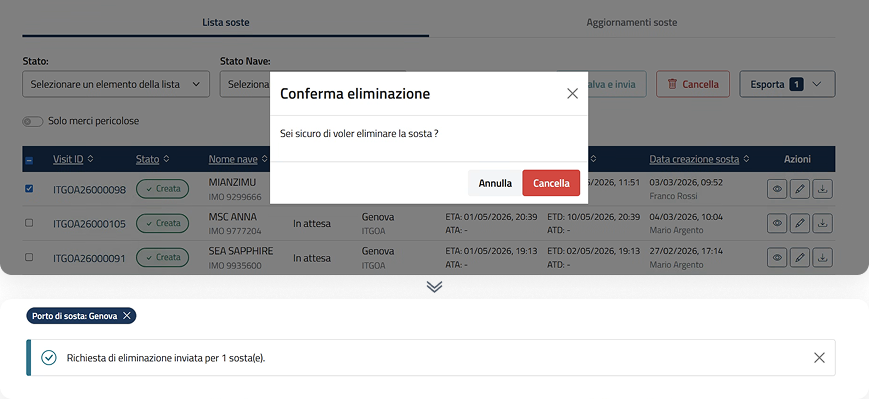
Cancellazione sosta
Cancellazione sosta dalla dashboard
Dopo aver creato una sosta, l'utente può eliminarla tramite le azioni presenti all'interno della lista soste nella sezione "Panoramica", attraverso i seguenti passaggi:
Cancella dal dettaglio della sosta
Nell'elenco risultati delle soste è possibile accedere al dettaglio cliccando sull'"icona dell'occhio". All'interno del dettaglio per procedere con la cancellazione sarà necessario cliccare sul pulsante "Cancella".
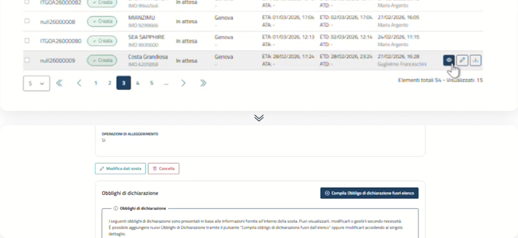
Finestra di conferma e giustificazione
Il sistema mostra una finestra di conferma. L'eliminazione della sosta è irreversibile e, una volta cancellata, non sarà più disponibile. Cliccare "Conferma eliminazione" per confermare.
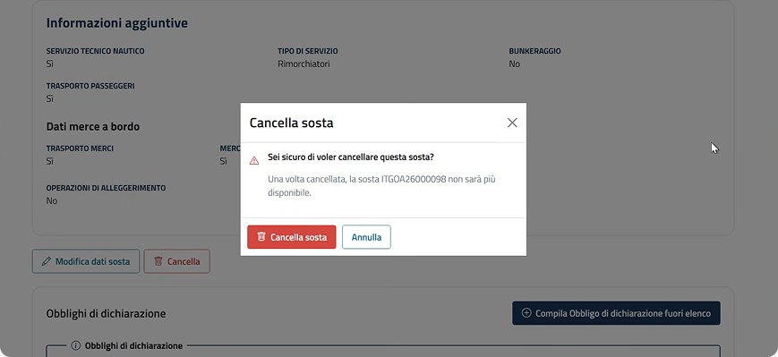